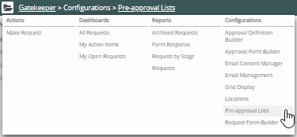
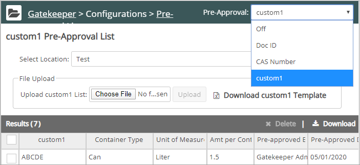
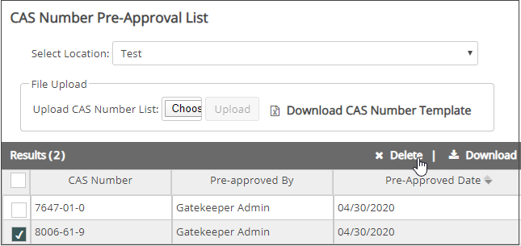

You can create lists of Chemical Abstracts Service (CAS) numbers, Doc IDs, or custom field values for products you wish to pre-approve. These products, when requested, bypass the approval process and appear in the Vault immediately.
First, you download a CAS number, Doc ID, or custom field spreadsheet template. Then, fill in the numbers or IDs for products to be preapproved. Finally, upload the spreadsheet to Gatekeeper. During the upload, Gatekeeper checks the spreadsheet for valid CAS numbers, Doc IDs, or custom field values and gives you the opportunity to correct any mistakes.
To create a Pre-approval List:
From the Gatekeeper dashboard, click Configuration and select Pre-approval Lists.

The Pre-approval List page displays:

Note: Only one custom field can be used in creating the pre-approval list. If you need to create a pre-approval list using a different custom field, contact your Enviance customer support administrator.
Note: In the Customer Field template, you need to change the generic name "Customer Field" to the specific name (case-sensitive) that you assigned to the custom field.
Note: You can update/correct the Custom Field template and upload it again as many times as needed; no duplicate entries will be created.
To delete a product from the pre-approval list:
